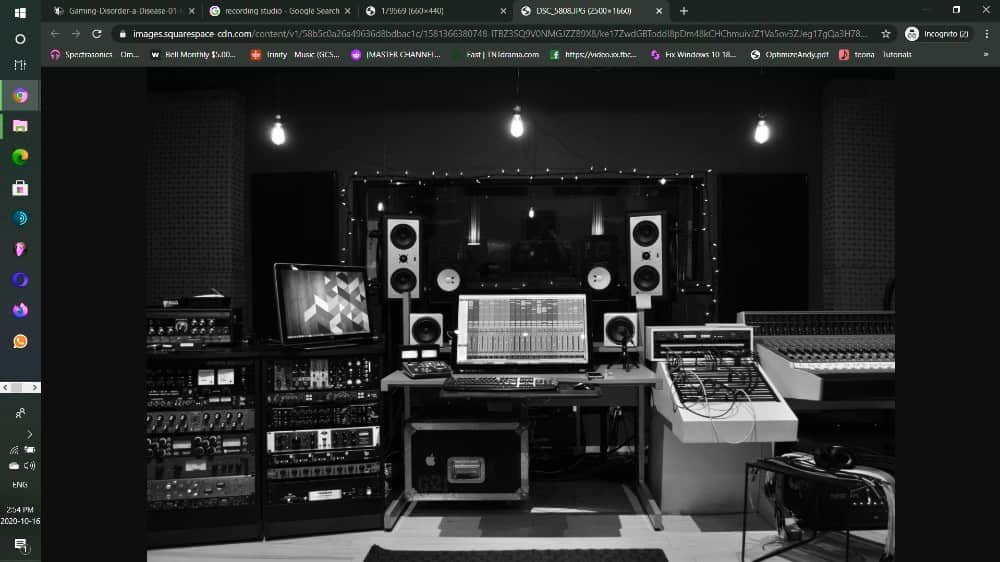
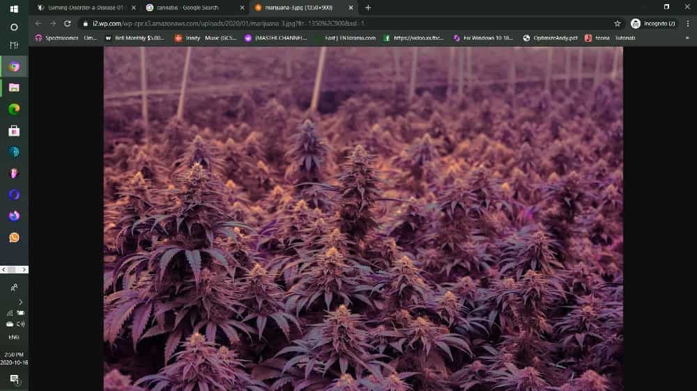
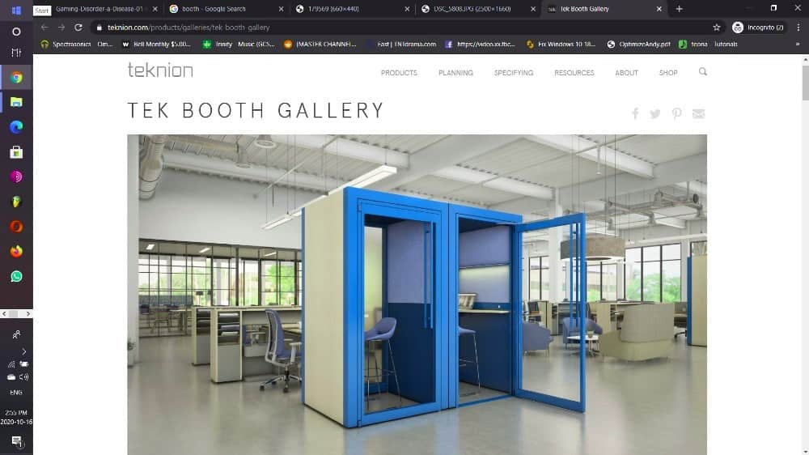

video Gaming
From Wikipedia, the free encyclopedia
Video games are defined based on their platform, which include arcade games, console games, and PC games. More recently, the industry has expanded onto mobile gaming through smartphones and tablet computers, virtual and augmented reality systems, and remote cloud gaming. Video games are classified into a wide range of genres based on their type of gameplay and purpose.
Read More...
Studio
From Wikipedia, the free encyclopedia

A recording studio is a specialized facility for sound recording, mixing, and audio production of instrumental or vocal musical performances, spoken words, and other sounds. They range in size from a small in-home project studio large enough to record a single singer-guitarist, to a large building with space for a full orchestra of 100 or more musicians.
Read More...
Soccer
From Wikipedia, the free encyclopedia
Soccer in Canada is the most popular sport in terms of participation rate. According to FIFA's Big Count, 2,695,712 people played in Canada in 2006.[4] Professional soccer in Canada is played in Major League Soccer, the Canadian Premier League and formerly the United Soccer League. Canada also has many semi-professional and amateur soccer leagues.
Read More...
Cannabis
From Wikipedia, the free encyclopedia

The plant is also known as hemp, although this term is often used to refer only to varieties of Cannabis cultivated for non-drug use. Cannabis has long been used for hemp fibre, hemp seeds and their oils, hemp leaves for use as vegetables and as juice, medicinal purposes, and as a recreational drug. Industrial hemp products are made from cannabis plants selected to produce an abundance of fiber.
Read More...
Booth
From Wikipedia, the free encyclopedia

Such a booth usually has lighting, a door to provide privacy, and windows to let others know if the booth is in use. The booth may be furnished with a printed directory of local telephone numbers, and a booth in a formal setting, such as a hotel, may be furnished with paper and pen and even a seat. An outdoor booth may be made of metal and plastic to withstand the elements and heavy use
Read More...